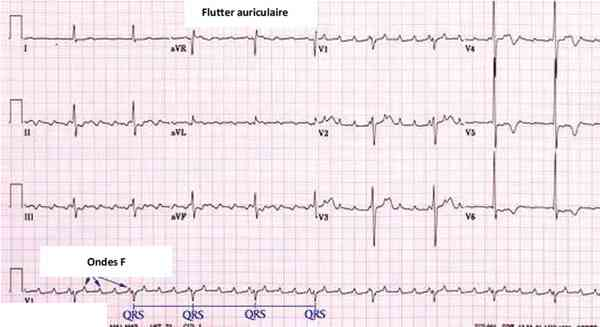

Bienvenue Sur Medical Education
Flutter auriculaire
Spécialité : cardiologie /
Points importants
-
Trouble du rythme caractérisé par des contractions coordonnées et régulières des oreillettes à la fréquence entre 240 et 400 bpm
-
Le flutter entraîne une tachycardie régulière à environ 150 bpm dans la forme commune avec bloc 2/1
-
Le flutter peut coexister ou se transformer en une fibrillation auriculaire ou revenir en rythme sinusal
-
Le flutter est généralement un phénomène aigu
Présentation clinique / CIMU
SIGNES FONCTIONNELS
-
Palpitations
-
Asthénie
-
Lipothymie
-
Dyspnée
-
Angor
CONTEXTE
Présentation clinique / CIMU
SIGNES FONCTIONNELS
- Palpitations
- Asthénie
- Lipothymie
- Dyspnée
- Angor
CONTEXTE
Terrain
- Peut être idiopathique
Antécédents
-
Cardiopathie sous jacente :
- HTA
- valvulopathie, le plus souvent mitrale
- insuffisance cardiaque
- insuffisance coronaire
- cardiopathie congénitale (communication inter auriculaire)
- hypertrophie ventriculaire gauche
- Diabète
Circonstances de survenue
- Intoxication éthylique aiguë
- Hyperthyroïdie
- Infection thoracique (péricardite, myocardite)
- Fièvre
- Pathologie pulmonaire (BPCO, pneumopathie)
- Embolie pulmonaire
- Electrisation
- Infarctus du myocarde
EXAMEN CLINIQUE
- Tachycardie régulière à l'auscultation cardiaque
- Possible HoTA
- Recherche de signes en faveur de pathologie cardiaque sous jacente (souffle notamment)
- Recherche de signes d'OAP, de collapsus périphérique
- Recherche de signes d'embolie artérielle de la grande circulation
- Recherche de signes d'insuffisance cardiaque droite (hépatalgie, turgescence jugulaire ou reflux hépato-jugulaire) ou gauche
- Palpation de la glande thyroïde à la recherche d'un goitre ou de nodules
EXAMENS PARACLINIQUES SIMPLES
ECG
 _61 Photo ECG : flutter auriculaire
- Ondes F atriales régulières et identiques battant à environ 300 bpm
- Pas de retour à la ligne isoélectrique
- Aspect en dent de scie ou en toit d'usine visible en DII et DIII
- Complexe QRS fin à environ 150, 100 ou 75/min en fonction de la conduction auriculo-ventriculaire
Prise de la SpO2 à la recherche d'un signe de mauvaise tolérance
CIMU
- Tri de 3 à 5 en fonction des signes de gravité
Signes paracliniques
BIOLOGIQUE
NFS (anémie), plaquette, hémostase en vue d'un traitement anticoagulant
Ionogramme, créatinine, urée
TSH
Troponine en fonction des symptômes
Digoxinémie si approprié
IMAGERIE
Radio de thorax (si la clinique suggère des anomalies pulmonaires : OAP ; infection)
Echographie trans-thoracique : si possible, en règle réalisée en différé
- Evaluation de la fonction ventriculaire gauche
- Recherche de valvulopathie
- Recherche d'hypertrophie ventriculaire gauche
- Recherche d'atteinte péricardique
Echographie trans-oesophagienne : technique de référence pour détecter les thrombi de l'auricule gauche
Diagnostic étiologique
-
Cardiopathie prédominante sur l'oreillette droite (communication inter-auriculaire, coeur pulmonaire chronique)
-
Valvulopathie
-
Infarctus du myocarde, péricardite
-
Idiopathique (dans 25% des cas)
-
Hyperthyroïdie
-
Infection pulmonaire
-
Embolie pulmonaire
-
Intoxication éthylique aiguë
-
Intoxication aux digitaliques
-
Péricardite
Diagnostic différentiel
-
Tachycardie sinusale (tachycardie régulière avec complexe QRS fin précédé d'une onde P)
-
Fibrillation auriculaire, mais tachycardie irrégulière
-
Tachycardie jonctionnelle
-
Tachycardie ventriculaire en cas de bloc de branche
Traitement
TRAITEMENT PREHOSPITALIER / INTRAHOSPITALIER
Diagnostic différentiel
- Tachycardie sinusale (tachycardie régulière avec complexe QRS fin précédé d'une onde P)
- Fibrillation auriculaire, mais tachycardie irrégulière
- Tachycardie jonctionnelle
- Tachycardie ventriculaire en cas de bloc de branche
Traitement
TRAITEMENT PREHOSPITALIER / INTRAHOSPITALIER
Stabilisation initiale
- Scope
- Voie veineuse périphérique
- Prévention du risque embolique en cas de durée supérieure à 48h ou de valvulopathie avec HBPM dose curative en fonction de l'âge et de la fonction rénale sinon HNF 500 UI/Kg/j
-
Si mauvaise tolérance hémodynamique ou coronarienne :
- contrôle de la fréquence ventriculaire par un bêtabloquant ou calcibloqueur en absence d'insuffisance cardiaque, ou un digitalique ou amiodarone dans le cas contraire.
- choc électrique externe en cas de trouble de la conscience ou arrêt circulatoire sinon sous sédation
- traitement des complications (OAP notamment)
Suivi du traitement pour information
- Anticoagulation efficace
-
Ralentir le rythme cardiaque :
- bêtabloquant
- calcibloqueur
- digitalique
-
Réduction du flutter :
- médicamenteuse par amiodarone 6 à 10 cp oral ou dose équivalente IV
- choc électrique externe (100 Joules) sous anesthésie générale brève, anticoagulation efficace et arrêt des digitaliques 48h avant
- stimulation auriculaire rapide (overdrive)
-
Prévention des récidives :
- anti-arythmique
- ablation par radiofréquence
MEDICAMENTS
-
Digoxine :
- 500 µg injectés lentement soit 1 ampoule ou jusqu'à la dose totale de 1000 µg en 24 heures
- doses d'entretien par voie orale ou , si la voie orale est impossible, par voie IV, 250 à 500 µg/j ou /2 jours, selon les résultats
- Propranolol : 1 mg / min sans dépasser 5 à 10 mg IVL sous ECG
- Esmolol : 500 µg/kg en 1 min, puis 50 µg/kg/min en 4 min
- Diltiazem : 0,25 à 0,30 mg/kg IV en 2 min ou équivalent PO
- Vérapamil : 5 à 10 mg IVL en 2 min ou 75 à 150 µg/kg, soit 1 à 2 amp à répéter si besoin après 10 min ou équivalent PO
Surveillance
CLINIQUE
-
Conscience, scope avec FC, SpO2, PA continue
-
Recherche de mauvaise tolérance avec signes d'insuffisance cardiaque ou complications thrombo-emboliques
PARACLINIQUE
-
ECG
Devenir / orientation
CRITERES D'ADMISSION
-
Hospitalisation en cardiologie
Mécanisme / description
-
Le flutter correspond à une macro-réentrée atriale au niveau de l'oreillette droite
-
Il existe plusieurs variétés de flutter, le plus commun de type I (ou typique) siégeant au niveau de l'anneau de la valve tricuspide de l'auricule droit
-
Plus rarement, le flutter trouve son origine le plus souvent au niveau de l'auricule gauche ; il est dit de type II (atypique)
Bibliographie
-
American college of cardiology, European society of cardiology, Blomstrom-lundqvist C, Scheinman MM, Aliot EM et al. ACC/AHA/ESC guidelines for the management of patients with supraventricular arrhytmias. Circulation 2003; 108: 1871-909
-
Urgences medico-chirurgicale de l'adulte. P Carli, B. Riou, C. Telion pages 215 et 216
-
Urgences médicales, Axel Ellrodt, collection estem pages 295 et 297
-
Management of atrial flutter in 2006, Immermann M, Meiltz A. Rev Med Suisse; 2006 May 24;2(67):1400-2, 1405
Devenir / orientation
CRITERES D'ADMISSION
- Hospitalisation en cardiologie
Mécanisme / description
-
Le flutter correspond à une macro-réentrée atriale au niveau de l'oreillette droite
-
Il existe plusieurs variétés de flutter, le plus commun de type I (ou typique) siégeant au niveau de l'anneau de la valve tricuspide de l'auricule droit
-
Plus rarement, le flutter trouve son origine le plus souvent au niveau de l'auricule gauche ; il est dit de type II (atypique)
Bibliographie
-
American college of cardiology, European society of cardiology, Blomstrom-lundqvist C, Scheinman MM, Aliot EM et al. ACC/AHA/ESC guidelines for the management of patients with supraventricular arrhytmias. Circulation 2003; 108: 1871-909
-
Urgences medico-chirurgicale de l'adulte. P Carli, B. Riou, C. Telion pages 215 et 216
-
Urgences médicales, Axel Ellrodt, collection estem pages 295 et 297
-
Management of atrial flutter in 2006, Immermann M, Meiltz A. Rev Med Suisse; 2006 May 24;2(67):1400-2, 1405
Bibliographie
- American college of cardiology, European society of cardiology, Blomstrom-lundqvist C, Scheinman MM, Aliot EM et al. ACC/AHA/ESC guidelines for the management of patients with supraventricular arrhytmias. Circulation 2003; 108: 1871-909
- Urgences medico-chirurgicale de l'adulte. P Carli, B. Riou, C. Telion pages 215 et 216
- Urgences médicales, Axel Ellrodt, collection estem pages 295 et 297
- Management of atrial flutter in 2006, Immermann M, Meiltz A. Rev Med Suisse; 2006 May 24;2(67):1400-2, 1405
Auteur(s) : Mariève BILLEMONT